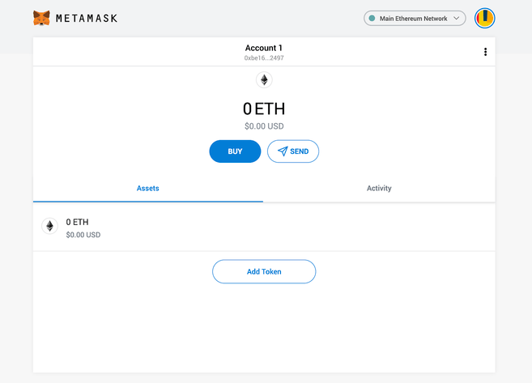
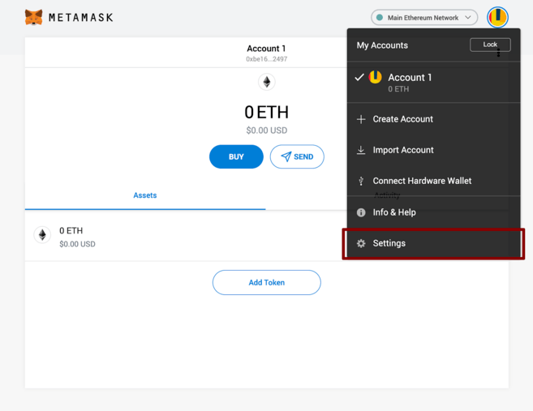
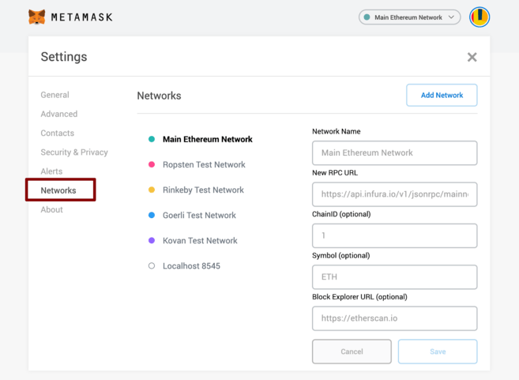
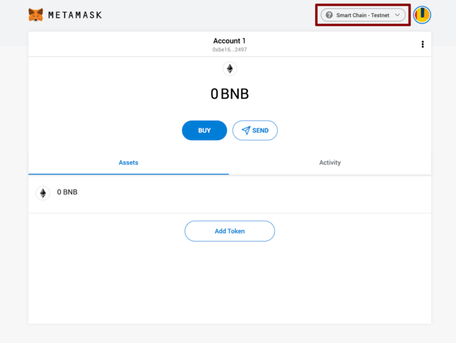
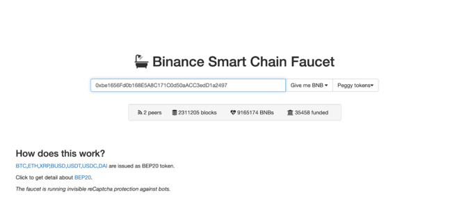
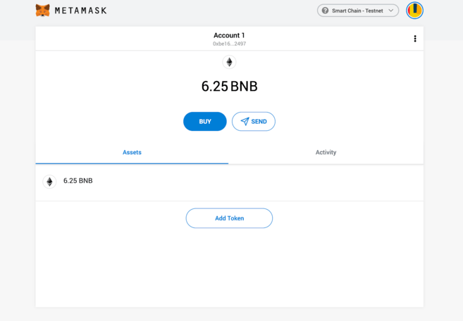
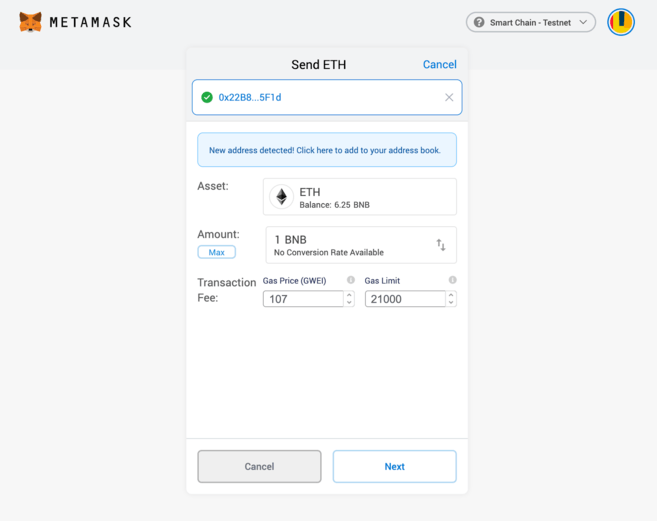

Conectando MetaMask a Binance Smart Chain
Instalar y configurar MetaMask
El monedero de MetaMask recién inicializado.
Configurar el monedero
Te habrás dado cuenta de inmediato que todavía estamos lidiando con un
monedero de Ethereum. En el mejor de los casos, éste no funcionará con DApps de Binance Smart
Chain. En el peor, podrías perder tus fondos al enviarlos a direcciones que en realidad no
puedes usar.Vamos a solucionarlo. Deberemos acceder a Settings (ajustes) para apuntar el monedero hacia los nodos de Binance Smart Chain.Selecciona "Settings" (ajustes) en el menú desplegable.
En la página de "Settings" (ajustes), debemos localizar el menú de
"Networks" (redes).
El menú de "Networks" (redes).
Deberemos clicar en Add Network (añadir red) en la esquina superior derecha, para así añadir manualmente la de Binance Smart Chain –ya que no viene integrada con MetaMask. Es importante señalar que
existen dos redes que podremos utilizar: la testnet o la mainnet. Debajo se
encuentran los parámetros a introducir para cada una.
Mainnet (ésta es probablemente la que andes buscando)
Network name: Smart ChainNew RPC URL: https://bsc-dataseed.binance.org/ChainID: 56Symbol: BNBBlock Explorer URL: https://bscscan.com
Testnet
Network Name: Smart Chain - TestnetNew RPC URL: https://data-seed-prebsc-1-s1.binance.org:8545/ChainID: 97Symbol: BNBBlock Explorer URL: https://testnet.bscscan.comEn este tutorial utilizaremos la testnet, pero probablemente tu querrás usar la mainnet. Te
recomendamos añadir ambas si pretendes emplear MetaMask para
transferir BNB o tokens de Binance Smart Chain. Una vez
que guardes la red y regreses a la vista principal,
notarás dos cosas: la red se ha configurado automáticamente a la que acabas de
ingresar, y las unidades ya no están denominadas en ETH, sino en BNB.
Nos hemos conectado a la testnet, pero probablemente tu te conectes a la
mainnet.
Realizar transacciones (en la testnet)
No dejes que el logotipo de Ethereum te engañe, nos hemos conectado a la red
de prueba de BSC. A continuación, consigamos algunos fondos para jugar. Coloca
el cursor sobre Cuenta 1 y haz clic para copiar tu dirección al portapapeles. Nos dirigiremos
la Binance Smart Chain Faucet y lo pegaremos en el formulario. Volvámonos ricos.
Las monedas Peggy pueden ser de interés si estás probando una aplicación que
admita tokens BEP-20. Son simplemente tokens emitidos en Binance Smart Chain que están
"vinculados" a activos en otras cadenas (como BTC, XRP, USDT, etc.), lo que
significa que se comercian al mismo precio. Sigamos con BNB por ahora.
Haz clic en el menú desplegable Give me BNB (Dame BNB) y selecciona la cantidad que deseas recibir. Es posible que debas
esperar un par de minutos, pero los fondos aparecerán en tu billetera de
testnet de manera inminente.Nuestra billetera recién financiada.
Desde aquí, enviaremos los fondos a algún lugar para demostrar cómo funciona.
Acabamos de obtener una dirección aleatoria de la Testnet BscScan a la que se la donaremos. Continúa y haz clic
en Enviar. 
Puedes ignorar las partes relacionadas con el ether. Aquí, puedes ajustar
manualmente la tarifa si es necesario.
Nos decidimos por una transacción de 1 BNB. Dejaremos las tarifas intactas y
presionaremos Siguiente. Luego, tenemos una oportunidad
más para revisar la transacción; si todo se ve bien,
presiona Confirmar. ¡Y eso es! Recibirás una
notificación que te informará cuando se liquide tu transacción.
En conclusión
MetaMask ha sido durante mucho tiempo el pasaporte de referencia para acceder al
extenso paisaje de Ethereum. Pero, con un mínimo esfuerzo, cualquiera puede
configurarlo para que apunte hacia Binance Smart Chain. Esto les permite
disfrutar de años de desarrollo para hacer de MetaMask una herramienta indispensable para cualquiera que interactúe con
aplicaciones descentralizadas.
{kind=link}
{kind=link}
{kind=link}
{kind=link}
{kind=link}
{kind=link}
{kind=link}